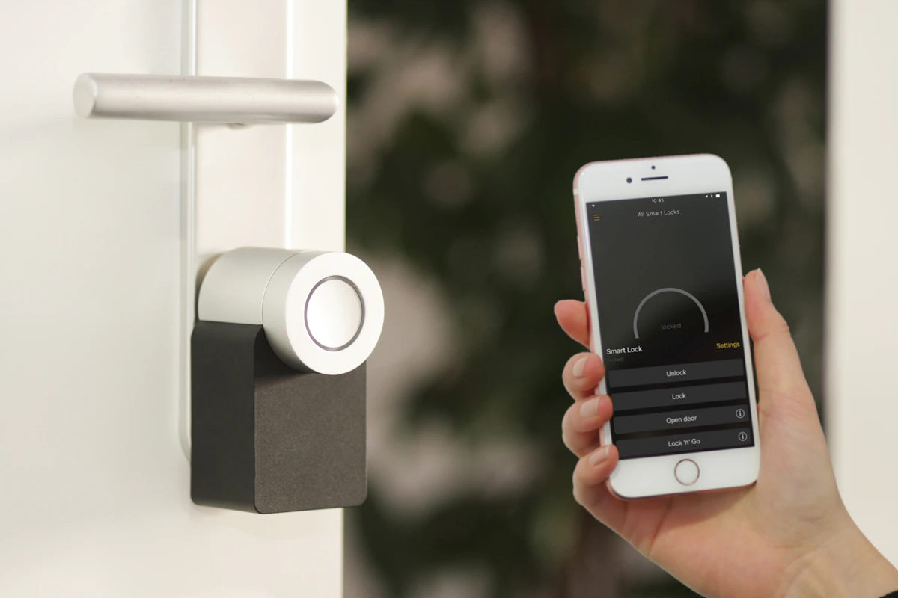
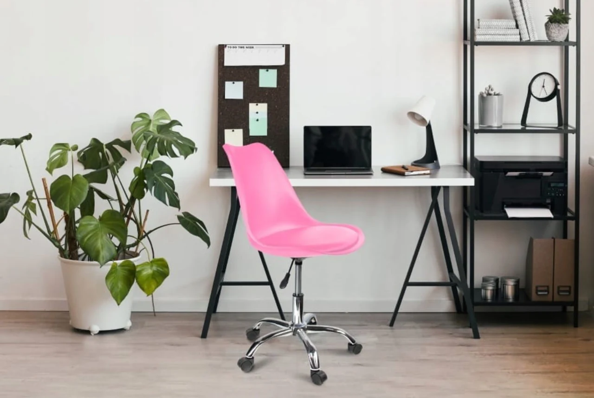

Laptop Pro 14 - jak wybrac laptopa do studiow i pracy zdalnej
Laptop Pro 14 jako punkt odniesienia: procesor, RAM i matryca pod realne scenariusze.
Czytaj wpisBlog ekspercki
Laptop Pro 14 jako punkt odniesienia: procesor, RAM i matryca pod realne scenariusze.
Czytaj wpis
Glosnik Move Go i przewodnik po ekosystemie: oswietlenie, automatyczne sceny i audio.
Czytaj wpisSluchawki Wave ANC i najwazniejsze parametry: kodeki, ANC, mikrofon i czas pracy.
Czytaj wpis
Laptop Air 13, ergonomia biurka, monitor i akcesoria poprawiajace codzienny komfort.
Czytaj wpisSmartfon Ultra Pro i proste ustawienia, ktore ograniczaja zuzycie energii na co dzien.
Czytaj wpisRozszerzony blog
Wpisy pomagaja przejsc od ogolnego pomyslu do konkretnego modelu. Jezeli szukasz laptopa, od razu zobaczysz roznice miedzy konfiguracjami i dowiesz sie, ktore parametry sa naprawde wazne. Jesli interesuje Cie audio lub smartfony, otrzymasz liste najczestszych bledow zakupowych i praktyczne wskazowki.
Artykuly tworza spojna baze wiedzy: od podstawowych porad po bardziej szczegolowe testy. Dzieki temu przed zakupem mozesz porownac kilka opcji i podjac decyzje bez pospiechu.
Zapisz sie do newslettera na stronie kontaktowej i otrzymuj cykliczne wskazowki zakupowe.